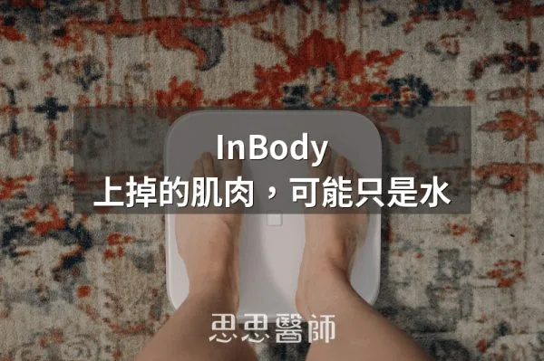
InBody 上掉的肌肉，可能只是水
2026-09-22
InBody 顯示肌肉量下降，在胰島素阻抗改善期常是水分與糖原排出的結果，應搭配力量、體圍與長期趨勢判斷，並固定量測條件。

58 篇文章

InBody 顯示肌肉量下降，在胰島素阻抗改善期常是水分與糖原排出的結果，應搭配力量、體圍與長期趨勢判斷，並固定量測條件。
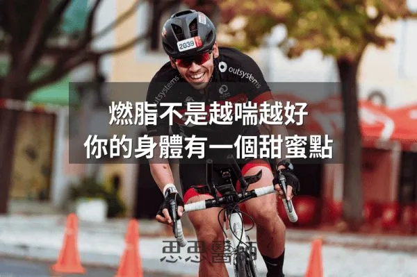
身體燃脂速度在中等強度時達最高峰，強度過高反而轉向消耗碳水，找到自己的甜蜜點比盲目衝高強度更有效燃脂。
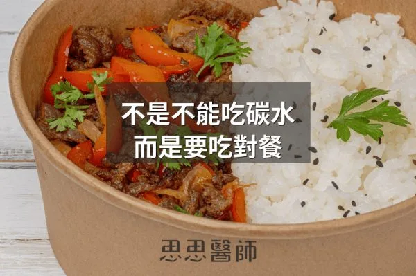
長輩不必戒碳水，建議午餐吃碳水並接著運動，晚餐少量且在睡前三到四小時，同時每餐蛋白質要給夠，才能兼顧血糖與肌肉。
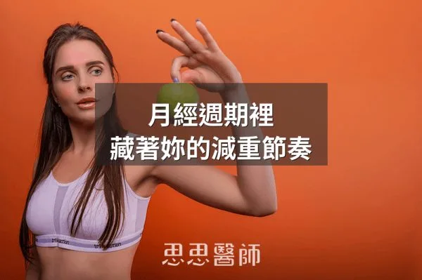
黃體期胰島素阻抗與食慾自然升高，減重策略需隨月經週期調整，黃體期應供應足量原型碳水以避免暴食。

Jason Fung 提出食物稠度影響飽足感，研究顯示稠的飲品讓之後披薩進食量較少，因此避免把熱量喝掉比計算熱量更有效。

脂肪組織裡的芳香化酶會把睪固酮轉換成雌激素，體脂越多轉換越多，形成睪固酮下降與體脂增加的惡性循環。

體脂過低會因瘦素不足使月經消失，過高則造成瘦素阻抗與生育問題，體脂與代謝環境是影響女性生育力的重要關鍵。

脂毒性並非吃脂肪造成，而是肝臟用過量碳水自製脂肪，加上脂肪組織失能溢出游離脂肪酸，低碳高脂者三酸甘油酯反而可能較低。

減重卡關常有多重原因，包括代謝下降、肌肉流失、荷爾蒙問題、藥物、睡眠、隱藏熱量與腸道菌相，需逐一查清楚再處理。

DNP 曾在 1930 年代被當作減重藥，靠干擾粒線體能量生產使代謝暴增，但劑量窗口極窄、副作用致命而被禁。

作者自己做五天鯖魚斷食，氣酮升到 23.0 ppm、空腹血糖由 107 降到 85 mg/dL，並討論其限制，屬個人經驗分享。

魚斷食透過高蛋白保肌肉、高Omega-3啟動FGF-21和脂肪燃燒，進入類斷食代謝狀態卻難達深層自噬，相比水斷食各有不同機轉側重。

吃進的脂肪不會直接變成體脂，但攝取超過個人消化能力就是太多，文中列出腹瀉或漂浮便、右上腹悶痛、體重停滯等訊號。

人體有獨立的蛋白質偵測系統，蛋白質比例不足時會持續發出飢餓訊號，驅動著整體熱量攝取大幅增加。

Zone 2和HIIT訓練目標不同，Zone 2建立粒線體基礎，HIIT提升最大攝氧量，兩者相輔相成。

GLP-1 藥物減重常伴隨肌肉流失，文中主張用藥期間每週至少兩次阻力訓練並攝取足夠蛋白質，讓肌肉分泌的肌肉動素接手，降低停藥後復胖。

一項隨機對照交叉試驗發現，餐後僅 1 分鐘舒適步調上下樓梯就能降低血糖與胰島素，3 分鐘更能改善胰島素敏感度，受試者主要是健康年輕人。

肥胖者的過量瘦素進入大腦會改變血管構造，過度激活交感神經，導致腎臟無法正常排鈉，所以高血壓與其說是鹽的問題不如說是脂肪的問題。

間歇性斷食的禁食時間越長，膽汁膽固醇過飽和比例越高，增加結石風險；作者建議控制減重速度、維持適量脂肪並以健康脂肪開啟第一餐。

只靠熱量限制或瘦瘦針而缺乏阻力訓練，會流失肌肉並容易復胖成肌少性肥胖，作者建議搭配阻力訓練並把蛋白質拉到每公斤體重 1.5 公克以上。

水果中的果糖代謝路徑與葡萄糖不同，過量攝入會繞過胰島素調節直接傷害肝臟與代謝，應限量食用並搭配纖維質。
食慾素是大腦的清醒總開關，葡萄糖會抑制它，所以午餐吃大量精緻碳水容易下午昏沉，作者建議白天低碳、晚上再適度攝取碳水。
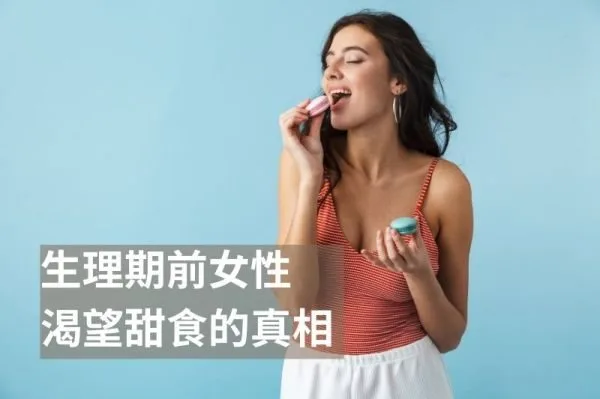
生理期前的甜食渴望源於雌激素下降導致血清素濃度下跌，攝取富含色胺酸的食物與維生素B6、鎂可協助合成血清素。
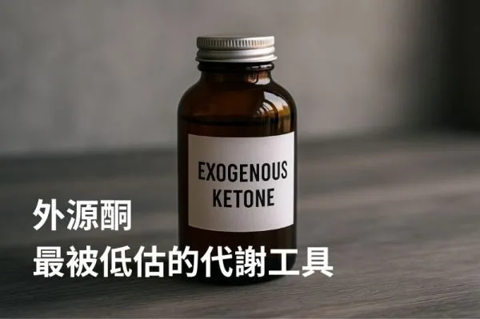
外源酮是直接補充的酮體，不必低醣也能讓血中酮體上升，作者認為它能穩定能量、輔助斷食並調節神經訊號，是自然的代謝穩定工具。
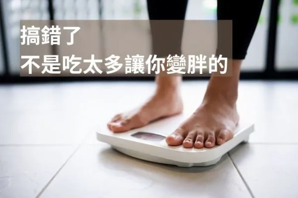
肥胖根源於粒腺體能量效率下降而非簡單熱量過多，透過喚醒肌肉、調整燃料比例與改善睡眠可恢復代謝靈活度進而自然減重。

多囊性卵巢症候群涉及胰島素阻抗和慢性發炎，控制胰島素是核心策略，透過低升糖飲食、運動、肌醇補充可改善排卵和月經。

微糖手搖飲仍含15克糖足以觸發果糖生存開關，促使身體進入儲脂模式，應改喝無糖茶飲或用天然代糖替代。

低碳適應後重新進食碳水可提升代謝靈活性、改善胰島素敏感度和甲狀腺荷爾蒙，讓身體脫離節能模式，體重可能持續下降。

醋的醋酸可降低餐後血糖並增加飽足感，作者建議隨餐、稀釋後飲用，但也有研究指出醋對血糖沒有影響，只能當輔助、不能取代治療。

脂肪與糖分同時出現會啟動特殊生化反應，比單獨攝取的情況更容易會促進脂肪囤積與代謝功能損傷。

壺鈴訓練能同時訓練肌肉與心肺功能，短短十分鐘可達慢跑三十分鐘的訓練效果，是極高效率的運動。

碳水會不會變成脂肪不只看吃多少，也看吃的時間，中午左右胰島素敏感度最高較適合，晚上則要少量並提早吃完。

長期能量不足會使 leptin 下降而抑制排卵，造成功能性下丘腦性閉經，恢復足夠的能量供應與營養密度才是讓月經回來的關鍵。

月經週期中黃體期的黃體素上升會增加食慾約 238 至 600 大卡，是正常生理現象而非意志力問題。

黑咖啡與無糖茶的咖啡因與茶鹼能抑制 PDE 酵素、維持 cAMP，提升脂肪分解效率以輔助減重。

多項研究證實每日 8000 步可顯著降低全因死亡率與心血管疾病風險，是實証支持的活動量目標。
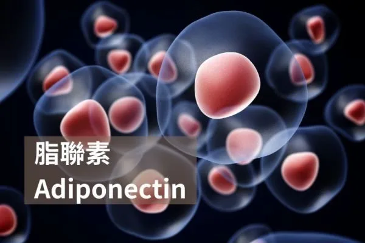
脂聯素是脂肪細胞分泌的荷爾蒙，具有增進胰島素敏感度和抗發炎的功能，濃度過低與代謝症候群、肥胖和糖尿病等疾病相關，可透過營養飲食、規律運動和健康減重改善。

生酮狀態血酮體濃度在 0.5 至 3.0 mmol/L 時屬正常代謝，與危及生命的酮酸中毒完全不同。

相撲選手雖然體重龐大但多為皮下脂肪，肌肉量高且代謝穩定，體質屬於功能型超重而非病態肥胖現象。

脂肪分成內臟脂肪與皮下脂肪，內臟脂肪會釋放發炎物質、風險較高，皮下脂肪相對無害，可用量腰圍和用手捏初步判斷。

引用 David Perlmutter 的觀點，高尿酸會抑制 AMPK、激活 AMPD2，使身體更易囤脂並導致胰島素阻抗，果糖也會迅速提升尿酸。
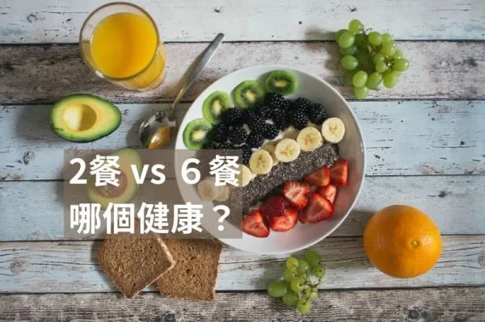
將進食時間限制於12小時內可提升胰島素敏感性，與少量多餐相比，低頻率進食對血糖控制可能更有效。
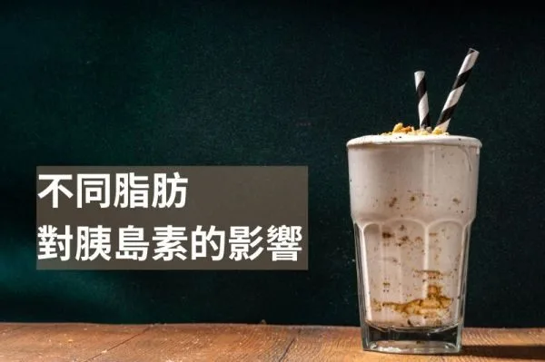
單元不飽和脂肪酸對胰島素影響最小，飽和脂肪會導致胰島素阻抗，多元不飽和脂肪會降低胰島素分泌。

原型食物富含營養密度與膳食纖維，能提升飽足感並促進代謝，但加工食品非全為有害，關鍵在於整體飲食習慣的平衡。
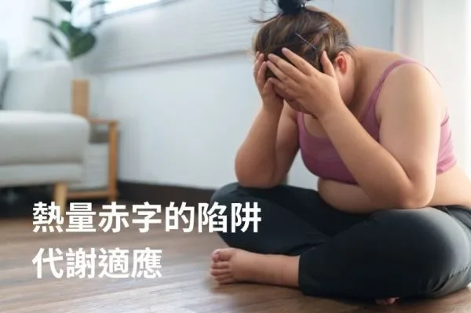
代謝適應導致快速減重後基礎代謝持續下降6年以上，應避免極端低熱量飲食，增加蛋白質、搭配阻力訓練和循環減重策略。
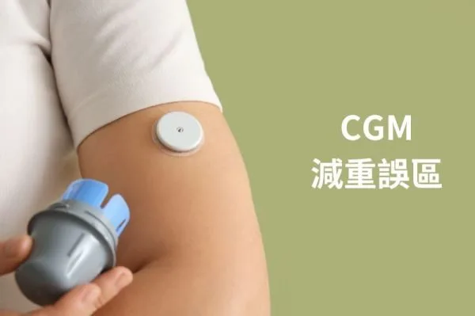
CGM 只看血糖並不夠，影響肥胖的核心是胰島素，血糖平穩的食物仍可能刺激胰島素而變胖，數據只能當參考。
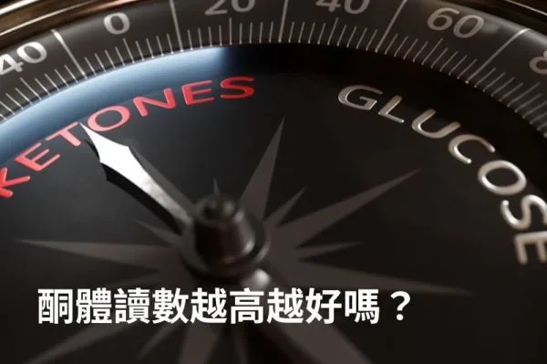
酮體數值高低不代表脂肪燃燒效率，脂肪適應後血酮可能降低但脂肪燃燒仍活躍，應用血糖酮體指數和身體感受評估酮症效果。
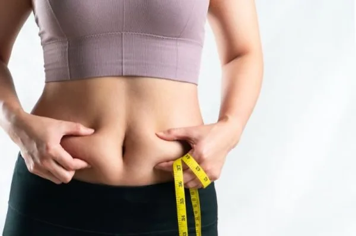
頑固脂肪血液循環差、易吸收胰島素，無法透過局部運動減少，可結合有氧運動、HIIT、冷療、紅光療法等多管齊下改善。

減重應避免每天量體重和過度依賴體組成數據，改用量圍度、計算週平均體重、拍照記錄等更準確的方式追蹤身形改變。
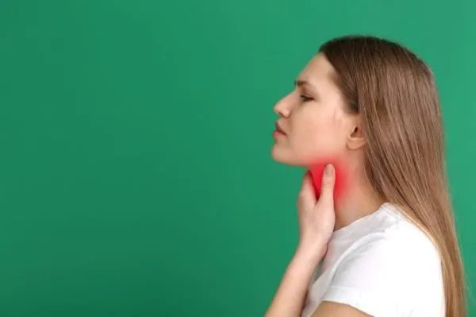
甲狀腺低下患者應避免過度減少熱量、進行高強度運動、極端限制碳水，應選擇正確飲食和適合的運動方式才能有效減重。
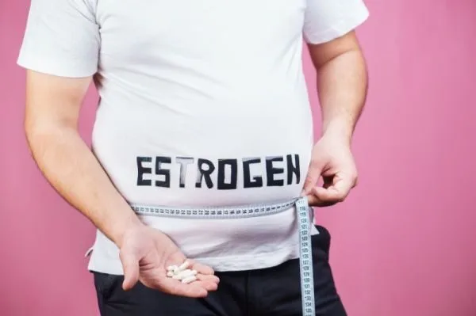
高雌激素與肥胖形成惡性循環，脂肪細胞增加導致更多雌激素生成，進而加重胰島素阻抗與體重增加。
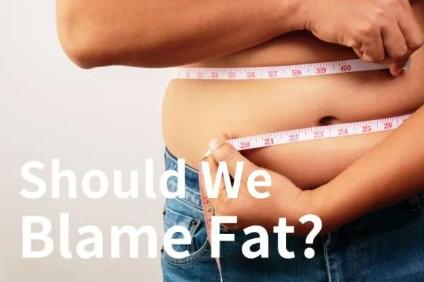
萊倫氏症候群患者儘管肥胖卻罕患糖尿病與癌症，其胰島素敏感性與常人大幅不同且IGF-1極低。

代謝健康肥胖者和代謝不健康瘦人的存在，體現出體重並非唯一的健康評估指標，代謝狀態同樣重要。

不健康食物因高度加工，精心設計糖鹽脂肪比例刺激大腦獎勵迴路，導致容易上癮難以抗拒的上癮結果。
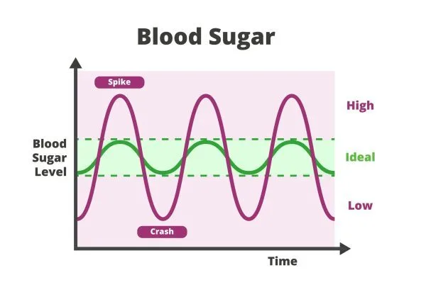
血糖超過160的高峰引發活性氧化物質和發炎激素增加，導致慢性發炎和血管損害，應避免易引起血糖急劇升高的食物。

測量酮體有三種方式，尿酮最便宜但最不準確只在生酮初期測得，血酮最準但需扎針且費用較高，氣酮最方便但機器昂貴，每個人的酮體基準不同無需互相比較。

快速澱粉如白麵包20至30分鐘完全吸收導致血糖急劇上升，慢速澱粉如糙米需1至2小時，能穩定血糖減輕胰臟負擔。
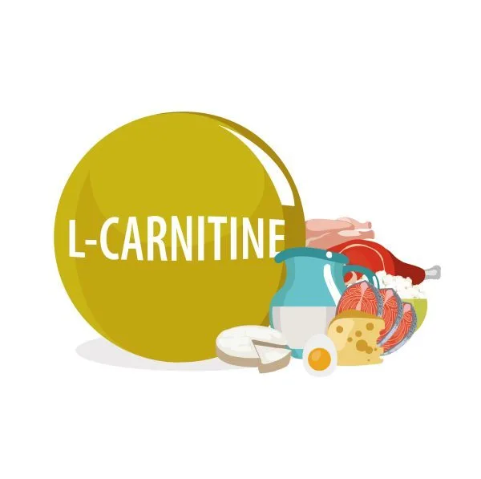
肉鹼將長鏈脂肪酸運入粒線體進行脂肪燃燒產生能量，素食者血液濃度較低但不一定缺乏，動物性食材、起司是主要來源，每日建議攝取2公克。